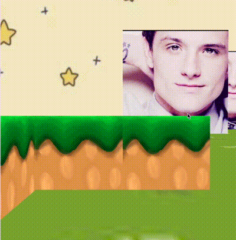
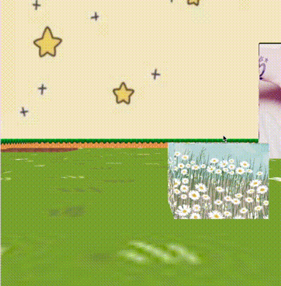

Welcome back to your beautiful garden! Oh no... what is going on?!! It looks like Josh Hutcherson has taken over and has destroyed all your flowers!
Plant them again without getting caught by him! You can delete the grassy blocks (surrounding the area), and you can add flowers!
There are some empty planter boxes in your garden... Press the 'Start' button and fill them up.
To navigate:
W - Forward
A - Left
S - Backwards
D - Right
To look up or down, press the up or down arrows
To place a lovley tulip block, press "L"
To place a magnificent daisy block, press "M"
To delete a grassy block, press "P"
To erase all blocks created by you, press "X".
See below for an example on deleting grassy blocks and adding flower blocks.


Ashley Gonsalves
About
This is a small game, developed with JavaScript. The objective is to
plant as many flowers as you can and not let the the scary block touch you.
The world features walls, a skybox, and a ground. Players can control the
camera using the keyboard inputs shown to the right. Additionally, users
can add blocks, delete blocks, and reset the blocks.
Grade Received: 100%